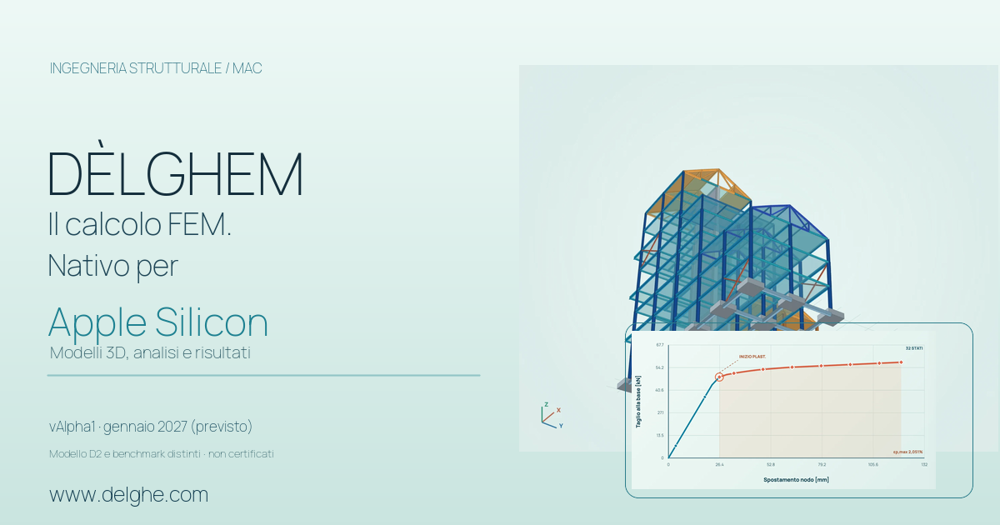
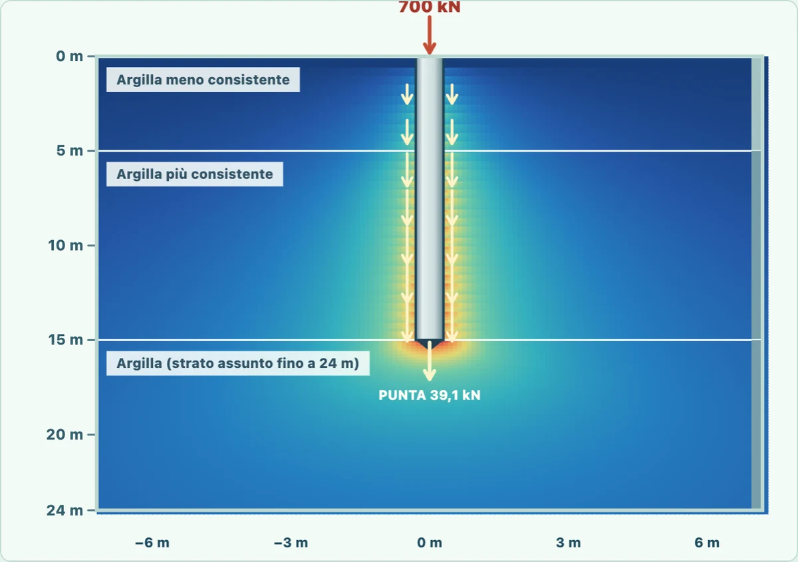

DÈLGHEM / PRESS & SHARE
Un nuovo modo di vedere le strutture.
Materiali pubblici per raccontare il progetto DÈLGHEM: immagini autentiche del programma, informazioni corrette sullo sviluppo e testi pronti da condividere.
Schermate reali del software Banner per siti ingegneria ↗
GRAFICA PROMOZIONALE / CONDIVISIONE
Anteprima social pronta per la condivisione
Grafica 1200 × 630 px composta con l’immagine della torre D2 e una curva Pushover da un benchmark numerico separato. Non è una schermata dell’app e non rappresenta una verifica strutturale della torre.
Apri la grafica originale 1200 × 630 ↗
Il progetto, in breve.
- 01 / PIATTAFORMA
macOS / Apple Silicon
Applicazione progettata nativamente per Mac Apple Silicon, senza necessità di avviare Windows tramite una macchina virtuale.
- 02 / AMBITO
Strutture / FEM
Modellazione FEM tridimensionale, analisi e verifiche entro i domini già implementati e documentati.
- 03 / PROCESSO
Modella / Analizza / Documenta
Funzionalità in sviluppo per acciaio, cemento armato, fondazioni, DXF e assistente Genius, con limiti dichiarati.


PRESS / QUOTE
Descrizione breve per articoli e social
DÈLGHEM è un software di calcolo strutturale in sviluppo per macOS e Apple Silicon. Integra modellazione FEM 3D, analisi, disegni e strumenti di gestione del progetto. La vAlpha1 è prevista per gennaio 2027.
DÈLGHEM D2 / MODELLI NATIVI VERIFICATI SOLO COME GEOMETRIA
Modelli 3D strutturali realizzati con DÈLGHEM D2
Cinque geometrie dimostrative e modificabili in DÈLGHEM D2: muratura, coperture in legno, ponte su cerniere e carrelli, travi di fondazione Winkler e telai controventati. Non sono risultati di calcolo, né verifiche di sicurezza.


I modelli sono ipotesi geometriche e costruttive a scopo dimostrativo: nessuno è stato dimensionato, verificato o calcolato per un cantiere reale. La fondazione Winkler usa un terreno assunto, non una prova geotecnica.
Apri il carosello 3D interattivo ↗DÈLGHEM D2 / RISULTATI STRUTTURALI DIAGNOSTICI
Pali, stratigrafia e smorzatori: risultati DÈLGHEM
Mappe delle tensioni con palo Ø60 in terreni ipotetici e portale in acciaio con e senza dispositivo viscoso. Le reazioni dei pali e le due storie dinamiche sono calcolate realmente nel dominio dichiarato; il campo di influenza nel terreno resta un’approssimazione analitica, non un risultato FEM geotecnico.




Il confronto è riferito a uno specifico accelerogramma sintetico e a un telaio equivalente SDOF. L’elemento viscoso in diagonale è rappresentato in 3D, ma nel calcolo entra tramite uno smorzamento equivalente. Nessuna prova di sicurezza NTC o certificazione di un dispositivo.
Esplora il laboratorio interattivo ↗REAL UI / macOS
Schermate reali del software
Le schermate rappresentano build reali di sviluppo e non attestano il superamento di ogni verifica numerica. Riutilizzale per presentazioni e articoli dedicati al progetto, indicando DÈLGHEM come fonte e senza suggerire certificazioni o funzionalità non documentate.


Contatti e collaborazioni
Condividi la presentazione
Per informazioni, proposte editoriali o collaborazione allo sviluppo, scrivi all'indirizzo pubblico del progetto.
delghem@proton.me Torna al sito